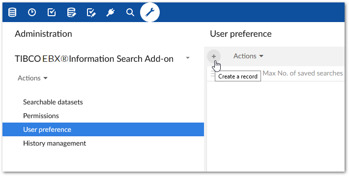

By default, the add-on:
Records each user's search history; up to 20 of the most recent queries.
Automatically displays a user's history when they access the add-on's search functionality.
As an administrator you can change the behavior mentioned above for individual users. To change this behavior:
Navigate to Administration > Data quality & analytics > TIBCO EBX® Information Search Add-on > User preference and create a new record.

Use the options in the record to change preference settings for an individual user.